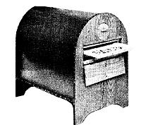
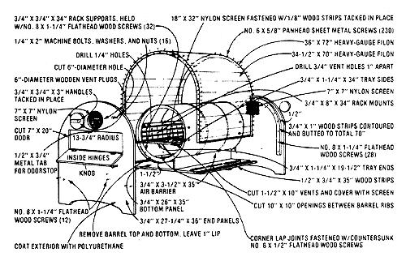

Now that summer is here and folks are beginning to gather the fruits (and vegetables) of their springtime planting labor, most people are looking for a simple and reliable method of preserving the tasty morsels.
True, freezing and canning are practiced by many, but food dehydrating - especially when the energy involved is provided free, courtesy of of Sol - may just be the soundest choice of all . . . for the following reasons:
After researching several solar dehydrator prototypes - and drawing on experience gained while building other energy-efficient curing bins in the past - Mother Earth News' shop crew settled on a tried-and-true design: a model made from plywood and a 55-gallon drum . . . which was developed by Leandre Poisson of the New Hampshire-based private research organization, Solar Survival.
Leandre and his wife Gretchen have been, for the past decade, developing a plan for total "solar living" . . . and - as a result -have been heavily involved in French intensive gardening, year-round organic food production, energy conservation, efficient shelter design, and food preservation. In a nutshell, the Poissons maintain that society's "solar switch" must be a cultural change rather than a high-technology substitution . . . hence their sun-powered dehydrator is low in cost, simple to build, totally passive, and highly practical.
It took one of Mother Earth News' researchers three honest days of work to complete the dryer, and the total expenditure came to about $65, all materials included. The beauty of this particular design is that it requires no more materials than one 4' X 8' sheet of 3/4" plywood, various scraps of "one-by" lumber, a 55-gallon barrel, a 3' X 12' piece of heavy-gauge Filon glazing, a section of 18" X 144" nylon screening, and some assorted hinges, screws, bolts, and finishing nails. ( With the exception of the flexible fiberglass-reinforced plastic glazing, everything else could easily be scrounged, which would reduce the dryer's "ball park" cost to a mere $25'!)
While building the Solar Survival dehydrator, Mother Earth News' woodworker Randy Weis made a few discoveries that are worth passing on to those interested in duplicating the device. "It's important to maintain the critical dimensions that are called for in the drawing, so as not to alter the necessary airflow through the various parts of the dryer. On the other hand, though, we incorporated some minor changes that may make the device simpler (or even less expensive) to build. We included, for example, a wooden - rather than angle iron - lip to hold the inner layer of glazing, and decided to use Filon rather than the sometimes more costly Kalwall."
In addition, Randy gave some thought to the question of what sort of screening material to use for the food trays: Many dehydrators utilize aluminum or galvanized hardware cloth or webbing, each of which can be toxic to edibles in the presence of heat. M. Poisson suggests solving the problem by coating the wire net with nonpoisonous paint, or - even better - by lining each webbed bin with a precut sheet of nylon screening (which can be removed, used as a carrying basket, and later washed if necessary). Other recommended alternatives include tightly stretched cheesecloth, woven baling twine, or even removable hardwood dowels.
All in all, it'd be difficult to find a passive solar dehydrator that's as compact, effective and inexpensive as this one. The device's design is such that the three food drying "musts" (no direct sunlight on the victuals, a moderate temperature range within the box, and a constant flow of heated air past and through the drying trays) are adhered to . . . the unit doesn't have to be moved with the sun (because of its unique curved glazing panels) . . . food can be stored in the dryer overnight if the vent doors are closed . . . and it works beautifully in all growing areas.
Highly recommended by the Mother Earth News editors: The Solar Food Dryer book, by Eben Fodor. If you are thinking of building a solar food dryer, or you just want to learn the basics of how to preserve food by dehydrating, this is the best book available. Includes full details on how to build a very effective solar-powered dehydrator. Order now.
|
 STAFF PHOTO The "solar survival" food dryer. |
STAFF PHOTO Diagram on how to build the "solar survival" food dryer. |
 STAFF ILLUSTRATION |